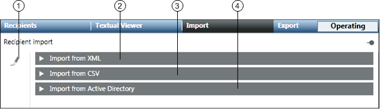
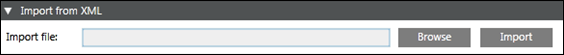
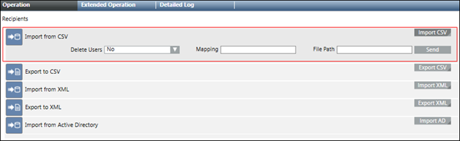

Recipient Import
The Import tab allows the user to import recipients from XML and CSV files and a department consisting of recipient users from an Active Directory.

| Name | Description |
1 | Recipient import edit | Enables the editing of import options. |
2 | Import from XML | Allows the user to import recipients from an XML file. |
3 | Import from CSV | Allows the user to import recipients from a CSV file. |
4 | Import from Active Directory | Allows the user to import a department consisting of recipient users from an Active Directory. |

NOTE:
In order to use the import feature, make sure you have enabled the Notification Application Rights. For more information, refer to the Enable Notification Application Rights section in Installation and Project Setup.
Import from XML
The Import from XML expander allows the user to import recipients from an XML file.

- Import file: Displays the path of the xml file selected for import.
- Browse: Allows the user to navigate to the location where the XML file is stored.
- Import: Imports the selected XML file.
Import from XML Using Command
The Import From XML property on the Operation tab allows the user to import recipients from an XML file through automatable Desigo CC commands.

- File Path: Displays the local XML file path of the MNS server.
- Import XML: Displays the File Path field and Send button.
- Send: Imports the XML file specified in the file path.
Import from CSV
The Import from CSV expander allows the user to import the recipients from a CSV file or configure a CSV mapping.

- Import file: Displays the path of the selected CSV file.
- Mapping: Displays the name of the CSV column mapping with the Notification property.
- Header Row: Select this check box if the CSV file using a mapping needs to have a header row.
- Columns: Allows the user to map a CSV column with a Notification property.
- Delimiter: Allows the user to select the separator for the CSV columns from the drop-down list.
- Browse: Allows the user to navigate to the location where the CSV file is stored.
- New: Allows the user to create a new mapping of the CSV Columns with Notification properties.
- Save: Saves the configured mapping.
- Save as: Allows the user to save an existing mapping with a different name and configuration.
- Delete: Deletes the selected mapping.
- Quotations: Allows the user to select the type of quotation from the drop-down list.
- Import: Imports the selected CSV file.
- Delete absent recipients: Deletes the existing recipients which are not present in the CSV file and are imported using identical import type (CSV) and mapping.
Import from CSV Using Command
The Import From CSV property on the Operation tab allows the user to import recipients from a CSV file through automatable Desigo CC commands.

- Delete Users: Deletes the existing recipients which are not present in the CSV file and are imported using identical import type (CSV) and mapping.
- Mapping: Specify the mapping for CSV import.
- File Path: Displays the local CSV file path of the MNS server.
- Import CSV: Displays the Delete Users, Mapping, File Path field and Send button.
- Send: Imports the CSV file specified in the File Path field.
Import from Active Directory
The Import from Active Directory expander allows the user to import a department consisting of recipient users from an Active Directory.

- Server: Enter the Active Directory server address.
- Available departments: Displays the list of available departments for the corresponding Active Directory server.
- Search: Allows the user to search for a department.
- Connect: Allows the user to connect to the Active Directory server.
- Departments to import: Displays the list of the departments selected for import.
- Mapping: Displays the name of the Active Directory property mapping with the Notification property.
- Columns: Allows the user to map an Active Directory property with a Notification property.
- New: Allows the user to create a new mapping of the Active Directory property with Notification properties.
- Save: Saves the configured mapping.
- Save as: Allows the user to save an existing mapping with a different name and configuration.
- Delete: Deletes the selected mapping.
- Import: Imports the selected department.
- Delete absent recipients: Deletes the existing recipients which are not present in the Active Directory and are created by using identical import type (Active Directory) and mapping.
Import from Active Directory Using Command
The Import from Active Directory property in the Operation tab allows the import of a department consisting of recipient users from an Active Directory.

- AD Server: The Active Directory server address from which the departments containing the recipient users need to be imported.
- Delete Users: Deletes the existing recipients which are not present in the Active Directory and are created by using identical import type (Active Directory) and mapping.
- Import AD: Displays the AD Server, Delete Users, Departments, Mapping fields and Send button.
- Departments: Specify the departments selected for import.
- Mapping: Specify the configured Active Directory mapping.
- Send: Imports the recipients of the specified department from Active Directory server.